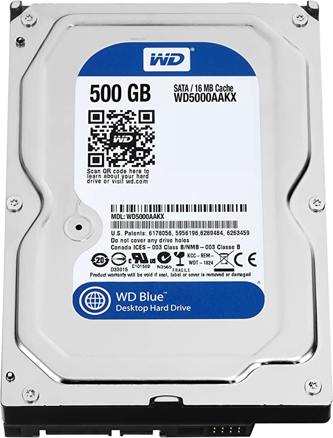

Armazenamento
Mais especificamente na informática, as unidades de armazenamento são todos os dispositivos, internos ou externos, que armazenam informações em um determinado sistema.
Informaçoes Principais
- Capacidade de armazenamento
- Taxa de transferência
- Velocidade de rotação
A capacidade de armazenamento refere-se à quantidade específica de armazenamento de dados que um dispositivo ou sistema pode acomodar.
Com taxa de transferência nos referimos à velocidade em que o hardware consegue processar os arquivos armazenados. Quanto maior a taxa de transferência, mais rápida a resposta do processador a determinados comandos.
O HD interno processa os dados de acordo com a velocidade do disco rígido, portanto o índice RPM (rotações por minuto), influencia na performance deste hardware.

HD Interno, Barracuda Compute HDD 3.5, 4TB, ST4000DM004, Seagate, HD interno, Prata
R$699,99
Á vista
R$700,45
Á prazo em 10x

Disco rígido WD Blue 500 GB Desktop - 7200 RPM SATA 6 Gb/s 16 MB de cache 3,5 polegadas - WD5000AAKX
R$110,00
Á vista
R$112,00
Á prazo em 10x

SSD, Kingston, SA400S37/960G
R$439,00
Á vista
R$440,00
Á prazo em 10x